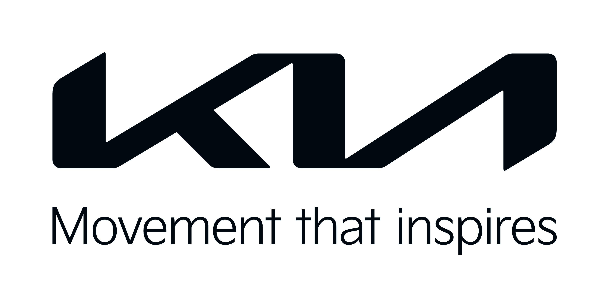

Автомобиль KIA |
 |
|---|
История создания первого автомобиля
Компания Kia появилась в 1944 году и называлась тогда Kyungsung Precision Industry. Начинал бренд далеко не с создания автомобилей. По началу фирма занималась производством стальных труб и мелких деталей для велосипедов, пока не решила, что пора создать свой собственный велосипед. Он появился в продаже в Корее в 1951 году под названием Sumchully.
И уже через год компания решила изменить название на Kia Industries.После велосипедов, в 1957 году, фирма занялась производством небольших мотоциклов по лицензии японского концерна Honda. Это была не единственная совместная работа корейского бренда с японским автопроизводителем. В 1962-ом Kia начала создание лицензированных грузовиков Mazda, а свой первый автомобиль выпустила лишь в 1974-ом. Годом ранее Kia Industries открыла собственный автомобильный завод, где производила компактную модель Brisa вплоть до 1981 года.
Производство было вынуждено прекратиться, когда Чон Ду Хван, бывший президент Республики Корея, добился консолидации автомобильной отрасли. Согласно указу военного диктатора, Kia больше не могла производить легковые авто и вынуждена была сосредоточиться на производстве исключительно грузовых моделей.
В 1985-ом Kia создала 95 000 машин, но уже в следующем году производство вновь остановилось, и с завода выехали всего 26 экземпляров за 12 месяцев. Для возвращения в автомобильную промышленность Kia должна была заручиться поддержкой более крупного игрока на рынке. Так она объединилась с американским концерном Ford. Бренды стали работать над производством автомобилей по лицензии Mazda, чтобы продавать их не только в Южной Корее, но и за ее пределами. Так появились модели Mazda 121, Mazda Avella и Kia Pride.
Первые модели продавались всего через четыре дилерских центра, располагавшихся в штат Оренгон.Затем фирма понемногу начала расширяться,начиная с продаж модели Sportage.К середине девяностых Kia открыла более ста дилерских центров в 30 американских штатах и успела продать около 25 000 экземпляров.К 1997 году Kia настиг страшный финансовый кризис, вынудивший компанию объявить о своем полном банкротстве. Год спустя Kia смогла договориться с Hyundai, создав взаимовыгодный альянс. По итогам сделки Hyundai стала владельцем 51% компании Kia. Все могло закончиться иначе, так как Ford Motor Company на тот момент уже десять лет пыталась выкупить бренд. Но Hyundai предложила большую цену. Помимо этого, сделка закрепила за Kia 22 дочерних компании, ранее принадлежавших Hyundai. Все они с 2005 года больше ориентируются на рынки европейских стран. К 2007-ому Kia Motors America начала строительство собственного завода в Вест-Поинте, штат Джорджия. На это был выделен миллиард долларов.
Спустя три года завод открылся, как раз к 15-летию начала роста Kia на американском рынке.В 2014-ом Kia оказалась в центре внимания всего мира, когда Папа Франциск выехал на Kia Soul во время своего визита в Южную Корею. По какой-то причине это привлекло огромное внимание общественности, несмотря на то, что ранее он уже ездил на Hyundai Santa Fe и Kia Carnival. Возможно, из-за того, что он использовал автомобиль на церемонии прямо в аэропорту Сеула.
Подробности создания первых машин KIA тут!!!
Улучшение автомобиля
Kia вошла в число лучших компаний в области безопасности по версии IIHS в 2018 году. Модель Forte заняла первое место в топе Safety Pick + в классе небольших автомобилей. Он оснащался опциональной системой предотвращения столкновения спереди и инновационными фарами, что помогло ему победить в номинации. В тот же рейтинг самых безопасных небольших авто попали модели Niro и Soul.
Еще одним победителем стала Kia Optima, выигравшая в классе средних автомобилей, куда попала и Sorento. А в категории больших моделей лучшей стала Kia Cadenza. В классе малых внедорожников Kia не выиграла, но в список лучших попала модель Sportage. Даже в категории лучших минивэнов попала модель Kia Sedona, хоть и обошлась без первого места.
Компания разработала множество технологий и оборудования для защиты водителей и пассажиров, благодаря которым и была признана мировым сообществом. Кузова автомобилей изготавливаются из высокопрочной стали, выдерживающей серьезные удары. Внутри всегда имеется полный набор необходимых подушек безопасности для водителя и всех пассажиров. Дополнительные подушки тоже присутствуют: в районе коленей водителя и в передних и задних шторках.Kia использует самые современные технологии, чтобы до последнего избегать столкновений. Например, радарный датчик ASCC вместе с камерой LDWS отслеживают опасность и мгновенно задействуют тормоза, чтобы избежать удара. Помимо этого, присутствует система TPMS, контролирующая давление воздуха в шинах и всегда предупреждающая водителя о том, что колеса необходимо подкачать.
Габариты и размеры KIA RIO
«Киа Рио» представлен в кузове хэтчбек или седан. Габариты машины составляют от 3990x1695x1470 до 4420x1740x1470 мм, вес — от 925 до 1256 кг. Kia Rio быстро передвигается в условиях города и без проблем паркуется. Его колесная база — 2600 мм, клиренс — 160 мм. Это оптимальные показатели для мегаполиса: седан без труда преодолевает бордюры на улицах и ямы на дорогах.
Багажный отсек довольно просторный — 480 литров. Этого достаточно, чтобы загрузить все необходимые вещи. Переднеприводные седаны оснащены бензиновыми движками объемом 1,4 или 1,6 литра, мощностью 100 или 123 л.с. Для работы двигателей необходим 92-й или 95-й бензин. Трансмиссия авто — шестидиапазонная механическая или шестиступенчатая автоматическая коробка. До 100 км/ч машина разгоняется за 10,3–12,9 сек. Расход топлива — 6,6 л/100 км.
Kia Rio собирают на заводах в Санкт-Петербурге. Там же производят соплатформенную модификацию Hyundai Solaris. В модельный ряд входит и кросс-хэтчбек Kia Rio X. В Европе и США продается автомобиль «Киа Рио», который непохож на российский дизайном и конструкцией.
Панель управления KIA RIO
1. Комбинация приборов.
2. Звуковой сигнал.
3. Передняя подушка безопасности водителя.
4. Управление осветительными приборами/указателями поворота.
5. Стеклоочиститель/стеклоомыватель.
6. Выключатель зажигания или кнопка ENGINE START/STOP (запуска/остановки двигателя).
7. Выключатель аварийной световой сигнализации.
8. Информационно-развлекательная система.
9. Система управления микроклиматом с ручным управлением / Автоматическая система управления микроклиматом.
10. USB-порт.
11. Рычаг переключения механической коробкой передач / Рычаг переключения автоматической коробкой передач.
12. Рычаг стояночного тормоза.
13. Передняя подушка безопасности пассажира.
14. Электрическая розетка.
15. Перчаточный ящик.
16. Органы управления аудиосистемой на рулевом колесе.
17. Подогреватель сиденья.
18. Кнопка включения/выключения обогрева рулевого колеса.
19. Кнопка включения/выключения предупреждения о расстоянии при парковке.
20. Органы управления помощью при движении на рулевом колесе.
21. Зарядное устройство.
Плюсы и минусы автомобиля
Плюсы автомобиля KIA Rio:
1)небольшой расход топлива;
2)крепкая, долговечная и дешёвая в ремонте подвеска;
3)надёжная простая АКПП;
4)надёжность узлов и агрегатов;
5)большой багажник (500 л);
6)просторный салон.
Минусы автомобиля:
1)жёсткая подвеска;
2)слабый двигатель 1,4 л, особенно для трассы из-за короткой пятой передачи МКПП;
3)плохая шумоизоляция;
4)плохое качество кожи на руле и КПП;
5)небольшой дорожный просвет (16 см);
6)плохое качество пластика салона;
7)вентилятор печки работает шумно на высоких оборотах.
Рейтинг самых популярных моделей KIA
Автомобили Киа в России 2023 — одни из немногих, которые продолжают активно поставляться. Поэтому корейские машины вызывают повышенный интерес. Tоп Kia — 5 востребованных моделей.
1) Kia Rio Возглавляет наш топ Киа модель Rio — по соотношению всех характеристик. Это современная машина 4 поколения, отлично подходящая для городских условий.

2) Kia K5 открывает новую эпоху дизайна автомобилей Kia.
В этом инновационном седане сочетаются динамика и комфорт, дополненные дерзким и уверенным профилем. Его элегантность считывается в пристальном внимании к деталям.